Bulbasaur
Nº #001
Tipo:
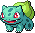
Bulbasaur nasce com uma semente nas costas que cresce junto com seu corpo. A semente armazena energia e permite que ele utilize técnicas relacionadas à natureza.
Ivysaur
Nº #002
Tipo:
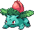
Ivysaur possui uma grande planta crescendo em suas costas. Conforme a planta se desenvolve, seu corpo fica mais forte e preparado para florescer.
Venusaur
Nº #003
Tipo:
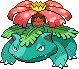
Venusaur carrega uma enorme flor nas costas, capaz de absorver energia da luz solar. É a forma final da linha evolutiva de Bulbasaur.
Charmander
Nº #004
Tipo:
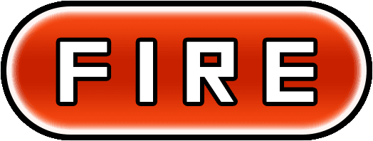
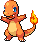
A chama na ponta da cauda de Charmander está ligada à sua vitalidade. Quando está saudável, ela queima com intensidade e pode continuar acesa mesmo quando fica molhada.
Charmeleon
Nº #005
Tipo:
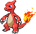
Charmeleon é um Pokémon de temperamento intenso que utiliza suas garras e seus ataques de fogo nas batalhas. Sua chama aumenta conforme ele se torna mais poderoso.
Charizard
Nº #006
Tipo:
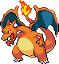
Charizard possui grandes asas e consegue voar em grandes altitudes. Seu fogo é extremamente poderoso e pode derreter materiais muito resistentes.
Squirtle
Nº #007
Tipo:
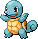
Squirtle possui um casco que oferece proteção e facilita seus movimentos na água. Ele consegue recolher o corpo para dentro do casco e disparar água com grande força.
Wartortle
Nº #008
Tipo:
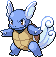
Wartortle possui uma cauda coberta por pelos que utiliza para manter o equilíbrio enquanto nada. Suas orelhas e cauda também ajudam em seus movimentos na água.
Blastoise
Nº #009
Tipo:
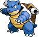
Blastoise possui dois grandes canhões de água instalados em seu casco. Eles disparam jatos extremamente fortes e precisos, usados principalmente em combate.
Caterpie
Nº #010
Tipo:
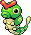
Caterpie é um pequeno Pokémon que possui uma grande capacidade de crescimento. Ele utiliza suas antenas para liberar um odor desagradável quando se sente ameaçado.
Metapod
Nº #011
Tipo:
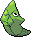
Metapod permanece praticamente imóvel enquanto seu corpo se prepara para evoluir. Seu exterior endurecido serve como proteção durante essa transformação.
Butterfree
Nº #012
Tipo:
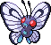
Butterfree utiliza suas grandes asas para voar e espalhar pó sobre seus adversários. Ele também possui uma excelente capacidade de localizar alimentos e flores.
Weedle
Nº #013
Tipo:
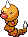
Weedle possui um pequeno ferrão venenoso na cabeça e se alimenta principalmente de folhas. Sua visão é limitada, mas suas antenas ajudam a perceber o ambiente.
Kakuna
Nº #014
Tipo:
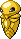
Kakuna permanece quase imóvel enquanto seu corpo se prepara para a próxima evolução. Apesar da aparência frágil, seu corpo se torna progressivamente mais resistente.
Beedrill
Nº #015
Tipo:
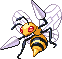
Beedrill é um Pokémon veloz e agressivo que possui grandes ferrões venenosos. Costuma proteger seu território e pode atacar em grupos.
Pidgey
Nº #016
Tipo:
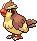
Pidgey é um Pokémon dócil que costuma habitar áreas gramadas. Ele possui excelente senso de direção e pode levantar poeira com suas asas para escapar de perigos.
Pidgeotto
Nº #017
Tipo:
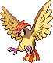
Pidgeotto possui garras fortes e uma visão aguçada. Ele patrulha grandes territórios em busca de presas e pode atacar rapidamente do alto.
Pidgeot
Nº #018
Tipo:
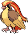
Pidgeot possui asas enormes e pode atingir velocidades impressionantes durante o voo. Suas penas coloridas também fazem parte de sua aparência característica.
Rattata
Nº #019
Tipo:
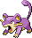
Rattata possui dentes que crescem continuamente e precisa roê-los para mantê-los sob controle. É muito adaptável e consegue viver em diversos ambientes.
Raticate
Nº #020
Tipo:
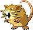
Raticate possui dentes grandes e resistentes, além de excelentes habilidades de natação. Ele consegue roer diversos materiais para alcançar alimentos.
Spearow
Nº #021
Tipo:
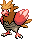
Spearow é um Pokémon pequeno, porém agressivo, que voa rapidamente em busca de alimento. Seu bico é utilizado tanto para atacar quanto para procurar comida.
Fearow
Nº #022
Tipo:
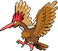
Fearow possui asas e um bico longos, permitindo que permaneça voando durante muito tempo. É conhecido por sua resistência e velocidade no ar.
Ekans
Nº #023
Tipo:
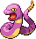
Ekans é uma serpente que se desloca silenciosamente pelo solo. Ele pode capturar presas usando seu corpo e costuma engolir pequenos animais inteiros.
Arbok
Nº #024
Tipo:
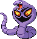
Arbok possui uma grande marca no peito que utiliza para intimidar adversários. Seu corpo forte permite que ele envolva e imobilize suas presas.
Pikachu
Nº #025
Tipo:
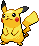
Pikachu armazena eletricidade em suas bochechas e pode liberá-la para atacar ou se defender. Quando vários Pikachu se reúnem, podem produzir descargas muito poderosas.
Raichu
Nº #026
Tipo:
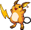
Raichu consegue armazenar grandes quantidades de eletricidade e liberá-las através de sua cauda. A eletricidade acumulada pode atingir níveis extremamente altos.
Sandshrew
Nº #027
Tipo:
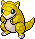
Sandshrew possui uma pele resistente que o protege de ambientes secos. Quando ameaçado, pode se enrolar formando uma pequena esfera defensiva.
Sandslash
Nº #028
Tipo:
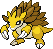
Sandslash possui garras afiadas e espinhos nas costas. Ele consegue escalar árvores e usar suas garras para atacar ou se defender.
Nidoran♀
Nº #029
Tipo:
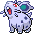
Nidoran♀ possui pequenos espinhos venenosos espalhados pelo corpo. Apesar de seu tamanho, consegue se defender liberando toxinas através deles.
Nidorina
Nº #030
Tipo:
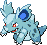
Nidorina possui um corpo coberto por pequenas estruturas venenosas. Ela é cautelosa e pode utilizar seus dentes e espinhos para afastar ameaças.
Nidoqueen
Nº #031
Tipo:
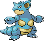
Nidoqueen possui um corpo robusto coberto por espinhos. Sua força física e sua resistência fazem dela uma poderosa combatente.
Nidoran♂
Nº #032
Tipo:
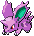
Nidoran♂ possui grandes orelhas e espinhos venenosos no corpo. Ele consegue liberar toxinas pelos espinhos quando se sente ameaçado.
Nidorino
Nº #033
Tipo:
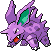
Nidorino possui um grande chifre venenoso na cabeça. Ele é agressivo e pode utilizar o chifre para atacar seus adversários.
Nidoking
Nº #034
Tipo:
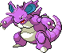
Nidoking possui um corpo poderoso protegido por uma pele resistente. Seu chifre, cauda e força física são utilizados para causar grandes danos.
Clefairy
Nº #035
Tipo:
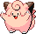
Clefairy é um Pokémon de aparência encantadora que costuma aparecer em noites de lua cheia. Dizem que possui uma ligação especial com a Lua.
Clefable
Nº #036
Tipo:
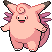
Clefable possui asas pequenas que utiliza para saltar e se deslocar. É conhecido por sua natureza reservada e por sua excelente audição.
Vulpix
Nº #037
Tipo:
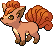
Vulpix nasce com uma única cauda que se divide conforme cresce. Ele consegue controlar chamas e possui uma aparência semelhante à de uma pequena raposa.
Ninetales
Nº #038
Tipo:
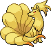
Ninetales possui nove caudas e uma aparência elegante. Dizem que vive por muitos anos e que suas caudas possuem poderes especiais.
Jigglypuff
Nº #039
Tipo:
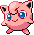
Jigglypuff possui uma voz capaz de colocar outros Pokémon para dormir. Ele costuma cantar repetidamente até que todos ao redor adormeçam.
Wigglytuff
Nº #040
Tipo:
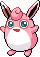
Wigglytuff possui um corpo extremamente macio e elástico. Ele consegue inflar o corpo com ar, ficando muito maior do que seu tamanho normal.
Zubat
Nº #041
Tipo:
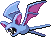
Zubat vive principalmente em cavernas e possui pouca capacidade de visão. Para se orientar no escuro, utiliza ondas sonoras semelhantes a um radar.
Golbat
Nº #042
Tipo:
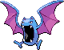
Golbat possui uma boca enorme e se alimenta principalmente de sangue. Suas presas permitem que ele ataque rapidamente suas vítimas.
Oddish
Nº #043
Tipo:
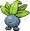
Oddish é um pequeno Pokémon noturno que se enterra no solo durante o dia. À noite, sai para absorver nutrientes e energia.
Gloom
Nº #044
Tipo:
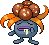
Gloom possui uma flor em sua cabeça que libera um odor intenso. O cheiro pode ser desagradável para algumas criaturas, mas também possui propriedades atrativas.
Vileplume
Nº #045
Tipo:
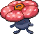
Vileplume possui uma enorme flor que espalha pólen ao se movimentar. Quanto maiores as pétalas, mais pesado pode ser o pólen liberado.
Paras
Nº #046
Tipo:
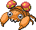
Paras vive com cogumelos crescendo sobre suas costas. Ele se alimenta de raízes e nutrientes encontrados no solo das florestas.
Parasect
Nº #047
Tipo:
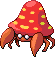
Parasect é dominado pelo grande cogumelo que cresce sobre seu corpo. O fungo libera esporos e utiliza os nutrientes obtidos do ambiente.
Venonat
Nº #048
Tipo:
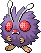
Venonat possui olhos grandes que ajudam a perceber pequenos movimentos. Seu corpo é coberto por pelos que também podem auxiliar na defesa.
Venomoth
Nº #049
Tipo:
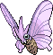
Venomoth é uma mariposa que libera escamas de suas asas durante o voo. Algumas dessas escamas podem produzir efeitos venenosos.
Diglett
Nº #050
Tipo:
Diglett passa grande parte de sua vida subterrâneo. Ele cava túneis rapidamente e deixa o solo revolvido por onde passa.
Dugtrio
Nº #051
Tipo:
Dugtrio é formado por três Diglett unidos. Juntos, eles conseguem cavar túneis profundos e mover grandes quantidades de terra.
Meowth
Nº #052
Tipo:
Meowth é um Pokémon noturno atraído por objetos brilhantes. A moeda em sua testa é uma de suas características mais marcantes.
Persian
Nº #053
Tipo:
Persian possui movimentos rápidos e silenciosos. Sua aparência elegante esconde um comportamento predatório e uma grande capacidade de ataque.
Psyduck
Nº #054
Tipo:
Psyduck sofre frequentemente com fortes dores de cabeça. Quando elas ficam intensas, pode liberar poderes psíquicos que normalmente não consegue controlar.
Golduck
Nº #055
Tipo:
Golduck é um excelente nadador e possui grande agilidade na água. A joia em sua testa é associada aos seus poderes especiais.
Mankey
Nº #056
Tipo:
Mankey é um Pokémon extremamente temperamental. Pode ficar furioso rapidamente e perseguir qualquer criatura que considere responsável por sua irritação.
Primeape
Nº #057
Tipo:
Primeape possui um temperamento ainda mais explosivo que Mankey. Quando fica enfurecido, dificilmente para de perseguir seu alvo.
Growlithe
Nº #058
Tipo:
Growlithe é um Pokémon leal e corajoso. Ele possui um excelente olfato e consegue reconhecer pessoas e outros Pokémon pelo cheiro.
Arcanine
Nº #059
Tipo:
Arcanine é conhecido por sua aparência majestosa e sua grande velocidade. Ele consegue percorrer longas distâncias com impressionante agilidade.
Poliwag
Nº #060
Tipo:
Poliwag possui uma pele fina e úmida através da qual seus órgãos podem ser parcialmente vistos. Sua cauda ajuda em seus movimentos na água.
Poliwhirl
Nº #061
Tipo:
Poliwhirl é um Pokémon anfíbio que consegue viver tanto na água quanto em terra. Seu corpo permanece úmido graças à sua pele.
Poliwrath
Nº #062
Tipo:
Poliwrath possui grande força física e é capaz de nadar por longas distâncias. Seu corpo musculoso permite que execute poderosos golpes de combate.
Abra
Nº #063
Tipo:
Abra possui fortes poderes psíquicos e costuma permanecer dormindo. Mesmo durante o sono, consegue utilizar habilidades que o ajudam a escapar de perigos.
Kadabra
Nº #064
Tipo:
Kadabra possui grandes poderes psíquicos que podem afetar objetos ao redor. Sua colher é frequentemente associada à concentração de suas habilidades mentais.
Alakazam
Nº #065
Tipo:
Alakazam possui poderes psíquicos extraordinários e uma inteligência muito elevada. Seus músculos físicos são menos desenvolvidos, mas suas habilidades mentais são impressionantes.
Machop
Nº #066
Tipo:
Machop treina constantemente para desenvolver sua força. Apesar do tamanho pequeno, possui músculos muito poderosos e grande capacidade física.
Machoke
Nº #067
Tipo:
Machoke possui músculos extremamente desenvolvidos e grande força física. Ele utiliza uma faixa para controlar sua enorme energia durante as atividades.
Machamp
Nº #068
Tipo:
Machamp possui quatro braços extremamente fortes. Ele consegue executar diversos golpes rapidamente e movimentar objetos muito pesados.
Bellsprout
Nº #069
Tipo:
Bellsprout possui um corpo fino e flexível, além de uma boca capaz de capturar pequenas presas. Ele costuma viver em locais quentes e úmidos.
Weepinbell
Nº #070
Tipo:
Weepinbell possui uma grande boca e utiliza substâncias pegajosas para capturar suas presas. Ele também pode liberar líquidos de propriedades irritantes.
Victreebel
Nº #071
Tipo:
Victreebel é uma planta predadora que utiliza seu aroma para atrair presas. Sua aparência lembra uma grande planta carnívora.
Tentacool
Nº #072
Tipo:
Tentacool vive principalmente no mar e possui tentáculos que podem liberar veneno. Seu corpo transparente permite que ele se camufle na água.
Tentacruel
Nº #073
Tipo:
Tentacruel possui numerosos tentáculos que podem se estender bastante. Ele utiliza essas estruturas para capturar presas e liberar toxinas.
Geodude
Nº #074
Tipo:
Geodude possui um corpo rochoso e costuma viver próximo a montanhas. Seu corpo resistente permite que ele suporte impactos muito fortes.
Graveler
Nº #075
Tipo:
Graveler possui um corpo pesado formado por rochas. Ele costuma rolar por encostas e terrenos montanhosos, destruindo obstáculos pelo caminho.
Golem
Nº #076
Tipo:
Golem possui uma carapaça rochosa extremamente resistente. Ele consegue rolar por terrenos acidentados e seu corpo pode suportar grandes impactos.
Ponyta
Nº #077
Tipo:
Ponyta possui uma crina e uma cauda feitas de chamas. Seus cascos são resistentes e permitem que ele realize saltos impressionantes.
Rapidash
Nº #078
Tipo:
Rapidash é extremamente veloz e possui chamas que cobrem sua crina e cauda. Ele pode atingir velocidades muito altas quando corre em linha reta.
Slowpoke
Nº #079
Tipo:
Slowpoke é conhecido por seus movimentos lentos e comportamento distraído. Ele costuma passar muito tempo próximo à água, aparentemente sem pressa.
Slowbro
Nº #080
Tipo:
Slowbro possui um Shellder preso à sua cauda, alterando seu comportamento e aparência. Ele se tornou mais resistente e possui habilidades psíquicas.
Magnemite
Nº #081
Tipo:
Magnemite flutua utilizando forças magnéticas. Seu corpo é capaz de produzir eletricidade e pode ser atraído por campos magnéticos intensos.
Magneton
Nº #082
Tipo:
Magneton é formado pela união de três Magnemite. A combinação de seus campos magnéticos produz uma força elétrica muito maior.
Farfetch'd
Nº #083
Tipo:
Farfetch'd costuma carregar um talo de planta que utiliza como arma. Ele pode usá-lo para atacar, se defender e até mesmo preparar alimentos.
Doduo
Nº #084
Tipo:
Doduo possui duas cabeças que podem pensar e agir independentemente. Suas pernas fortes permitem que corra em alta velocidade.
Dodrio
Nº #085
Tipo:
Dodrio possui três cabeças, cada uma associada a diferentes comportamentos. Suas pernas fortes fazem dele um corredor extremamente veloz.
Seel
Nº #086
Tipo:
Seel é adaptado a águas frias e possui uma camada de gordura que ajuda a manter seu corpo aquecido. Seu chifre também auxilia em seus movimentos.
Dewgong
Nº #087
Tipo:
Dewgong possui uma espessa camada de gordura que o protege do frio. Ele consegue nadar rapidamente em águas geladas e costuma descansar sobre o gelo.
Grimer
Nº #088
Tipo:
Grimer possui um corpo formado por uma substância viscosa e tóxica. Ele costuma viver em locais contaminados e pode deixar resíduos venenosos por onde passa.
Muk
Nº #089
Tipo:
Muk é formado por uma massa tóxica ainda maior que a de Grimer. Seu contato pode ser perigoso e ele é associado a ambientes muito poluídos.
Shellder
Nº #090
Tipo:
Shellder possui uma concha extremamente resistente que pode se fechar rapidamente. Sua língua permanece para fora da concha e é utilizada de diversas maneiras.
Cloyster
Nº #091
Tipo:
Cloyster possui uma concha extremamente dura coberta por espinhos. Pode disparar esses espinhos contra seus adversários com grande força.
Gastly
Nº #092
Tipo:
Gastly é um Pokémon formado principalmente por gás. Seu corpo pode envolver outras criaturas e provocar efeitos desagradáveis através de seus vapores.
Haunter
Nº #093
Tipo:
Haunter é um Pokémon fantasmagórico capaz de atravessar paredes. Ele pode surpreender suas vítimas de forma repentina e utilizar sua língua para atacá-las.
Gengar
Nº #094
Tipo:
Gengar consegue se esconder nas sombras e se aproximar silenciosamente de suas vítimas. Ele é conhecido por sua aparência sorridente e comportamento travesso.
Onix
Nº #095
Tipo:
Onix possui um corpo formado por segmentos rochosos e cava túneis subterrâneos em alta velocidade. Seu corpo cresce e se torna mais resistente com o tempo.
Drowzee
Nº #096
Tipo:
Drowzee possui poderes relacionados ao sono e aos sonhos. Ele pode afetar o estado de outras criaturas através de suas habilidades psíquicas.
Hypno
Nº #097
Tipo:
Hypno utiliza poderes psíquicos e um pêndulo para induzir outras criaturas ao sono. Ele possui habilidades relacionadas à manipulação de sonhos.
Krabby
Nº #098
Tipo:
Krabby vive próximo a praias e possui grandes pinças. Quando perde uma delas, pode regenerá-la posteriormente.
Kingler
Nº #099
Tipo:
Kingler possui uma enorme pinça que desenvolveu grande força. Ele pode utilizá-la para esmagar objetos e atacar seus adversários.
Voltorb
Nº #100
Tipo:
Voltorb possui uma aparência semelhante à de uma Poké Bola. Ele armazena eletricidade e pode liberar essa energia de maneira explosiva.
Electrode
Nº #101
Tipo:
Electrode armazena uma quantidade enorme de eletricidade. Quando acumula energia demais, pode liberar uma grande explosão.
Exeggcute
Nº #102
Tipo:
Exeggcute é formado por um grupo de seis criaturas semelhantes a ovos. Eles trabalham juntos como se fossem uma única entidade.
Exeggutor
Nº #103
Tipo:
Exeggutor é uma árvore alta com várias cabeças que podem agir individualmente. Cada cabeça possui sua própria personalidade e capacidade de pensar.
Cubone
Nº #104
Tipo:
Cubone utiliza um osso como capacete e também como arma. Ele é conhecido por seu comportamento reservado e por carregar consigo lembranças de sua mãe.
Marowak
Nº #105
Tipo:
Marowak utiliza um osso como arma e desenvolveu grande habilidade para lançá-lo. Com o passar do tempo, tornou-se um Pokémon mais resistente e determinado.
Hitmonlee
Nº #106
Tipo:
Hitmonlee possui pernas extremamente flexíveis e consegue esticá-las durante seus ataques. Seu estilo de luta é baseado principalmente em chutes.
Hitmonchan
Nº #107
Tipo:
Hitmonchan é especializado em golpes com os punhos. Seus braços podem desferir socos muito rápidos e poderosos.
Lickitung
Nº #108
Tipo:
Lickitung possui uma língua extremamente longa que utiliza para explorar o ambiente e capturar alimentos. Sua língua é uma de suas principais características.
Koffing
Nº #109
Tipo:
Koffing possui um corpo cheio de gases venenosos. Quando a pressão interna aumenta, pode liberar gases ou até mesmo explodir.
Weezing
Nº #110
Tipo:
Weezing é formado por dois corpos unidos e absorve gases tóxicos presentes no ambiente. Pode liberar uma mistura de gases extremamente venenosa.
Rhyhorn
Nº #111
Tipo:
Rhyhorn possui um corpo robusto e um chifre resistente. Quando começa a correr, pode continuar avançando por longas distâncias antes de conseguir parar.
Rhydon
Nº #112
Tipo:
Rhydon possui uma pele resistente capaz de suportar altas temperaturas. Seu chifre é forte o bastante para perfurar rochas e abrir caminhos.
Chansey
Nº #113
Tipo:
Chansey costuma carregar um ovo nutritivo que compartilha com pessoas e outros Pokémon. É conhecido por sua natureza cuidadosa e gentil.
Tangela
Nº #114
Tipo:
Tangela possui o corpo coberto por numerosas vinhas azuis. As vinhas crescem continuamente e podem se regenerar quando são arrancadas.
Kangaskhan
Nº #115
Tipo:
Kangaskhan protege cuidadosamente seu filhote, que permanece em uma bolsa na barriga. É um Pokémon forte e extremamente protetor.
Horsea
Nº #116
Tipo:
Horsea vive em ambientes aquáticos e consegue disparar água pela boca com precisão. Sua cauda enrolada ajuda em seus movimentos.
Seadra
Nº #117
Tipo:
Seadra possui espinhos venenosos e uma cauda poderosa. Ele nada com grande habilidade e pode liberar veneno quando é tocado.
Goldeen
Nº #118
Tipo:
Goldeen possui uma cauda e nadadeiras elegantes, além de um chifre na cabeça. É um nadador ágil que costuma viver em rios e lagos.
Seaking
Nº #119
Tipo:
Seaking possui um grande chifre que utiliza para atacar e abrir caminhos. Durante determinadas épocas, ele constrói ninhos para proteger seus ovos.
Staryu
Nº #120
Tipo:
Staryu possui uma joia central que brilha intensamente. Mesmo quando perde partes do corpo, consegue regenerá-las em determinadas condições.
Starmie
Nº #121
Tipo:
Starmie possui uma joia central que pode emitir diversos tipos de luz. Sua estrutura lembra uma estrela e está relacionada aos seus poderes especiais.
Mr. Mime
Nº #122
Tipo:
Mr. Mime é conhecido por criar barreiras invisíveis através de movimentos semelhantes aos de um mímico. É um Pokémon habilidoso e bastante expressivo.
Scyther
Nº #123
Tipo:
Scyther possui grandes lâminas nos braços e pode se mover tão rapidamente que parece desaparecer. Vive principalmente em áreas de vegetação densa.
Jynx
Nº #124
Tipo:
Jynx possui habilidades psíquicas e utiliza movimentos rítmicos para se comunicar. Seu corpo é adaptado a ambientes frios.
Electabuzz
Nº #125
Tipo:
Electabuzz possui grande quantidade de energia elétrica e costuma ser encontrado próximo a locais com muita eletricidade. Seus ataques podem liberar fortes descargas.
Magmar
Nº #126
Tipo:
Magmar possui um corpo adaptado ao calor e vive em regiões vulcânicas. Ele consegue produzir e controlar chamas durante as batalhas.
Pinsir
Nº #127
Tipo:
Pinsir possui grandes pinças na cabeça que utiliza para agarrar e arremessar adversários. É um Pokémon forte e resistente.
Tauros
Nº #128
Tipo:
Tauros é um Pokémon selvagem e extremamente vigoroso. Possui três caudas e costuma atacar utilizando seus chifres e sua grande força física.
Magikarp
Nº #129
Tipo:
Magikarp é um Pokémon conhecido por sua pouca capacidade de combate. Apesar disso, possui grande resistência e consegue sobreviver em diferentes ambientes aquáticos.
Gyarados
Nº #130
Tipo:
Gyarados é conhecido por seu comportamento extremamente destrutivo. Quando fica enfurecido, pode causar grandes danos e destruir áreas inteiras.
Lapras
Nº #131
Tipo:
Lapras é um Pokémon dócil e excelente nadador. Ele pode transportar pessoas sobre seu casco e possui uma inteligência bastante desenvolvida.
Ditto
Nº #132
Tipo:
Ditto possui a habilidade de transformar completamente seu corpo. Ele consegue copiar a aparência e as características de outros Pokémon.
Eevee
Nº #133
Tipo:
Eevee possui uma estrutura genética instável que permite que evolua de diferentes maneiras. Essa característica faz com que ele se adapte a diversos ambientes.
Vaporeon
Nº #134
Tipo:
Vaporeon possui características semelhantes às de uma criatura aquática. Sua estrutura corporal permite que nade com facilidade e se misture ao ambiente.
Jolteon
Nº #135
Tipo:
Jolteon possui pelos capazes de acumular eletricidade. Quando fica excitado ou ameaçado, pode liberar descargas elétricas muito fortes.
Flareon
Nº #136
Tipo:
Flareon possui uma estrutura interna capaz de armazenar calor. Ele pode aquecer o ar em seus pulmões e liberar chamas extremamente quentes.
Porygon
Nº #137
Tipo:
Porygon é um Pokémon artificial criado por tecnologia avançada. Seu corpo digital permite que execute diferentes funções e seja utilizado em ambientes virtuais.
Omanyte
Nº #138
Tipo:
Omanyte é um Pokémon pré-histórico revivido a partir de um fóssil. Possui uma concha espiral e tentáculos que utiliza para se movimentar na água.
Omastar
Nº #139
Tipo:
Omastar possui uma grande concha e tentáculos que utiliza para capturar presas. Seus dentes são fortes e sua aparência revela sua origem pré-histórica.
Kabuto
Nº #140
Tipo:
Kabuto é um Pokémon pré-histórico que foi revivido a partir de um fóssil. Seu corpo possui uma carapaça resistente e olhos adaptados ao ambiente.
Kabutops
Nº #141
Tipo:
Kabutops possui lâminas nos braços que utiliza para atacar suas presas. Seu corpo foi adaptado para se movimentar rapidamente tanto na água quanto em terra.
Aerodactyl
Nº #142
Tipo:
Aerodactyl é um Pokémon pré-histórico com grandes asas e dentes afiados. Seu corpo foi reconstruído a partir de um fóssil encontrado em rochas antigas.
Snorlax
Nº #143
Tipo:
Snorlax passa grande parte do tempo dormindo e comendo. É conhecido por seu enorme apetite e por seu corpo extremamente pesado.
Articuno
Nº #144
Tipo:
Articuno é um Pokémon lendário associado ao gelo. Suas asas podem provocar correntes de ar geladas e acredita-se que apareça em regiões montanhosas frias.
Zapdos
Nº #145
Tipo:
Zapdos é um Pokémon lendário relacionado à eletricidade e às tempestades. Dizem que sua aparição pode coincidir com fortes descargas elétricas no céu.
Moltres
Nº #146
Tipo:
Moltres é um Pokémon lendário envolto em chamas. Sua presença está associada ao fogo e sua aparência lembra uma grande ave em chamas.
Dratini
Nº #147
Tipo:
Dratini é um Pokémon serpentino que vive principalmente em ambientes aquáticos. Ele cresce continuamente ao longo de sua vida e passa por mudanças durante seu desenvolvimento.
Dragonair
Nº #148
Tipo:
Dragonair possui um corpo elegante e longilíneo, além de pequenas joias em sua cabeça. É associado a ambientes aquáticos e possui habilidades misteriosas.
Dragonite
Nº #149
Tipo:
Dragonite é um Pokémon poderoso capaz de voar e atravessar grandes distâncias. Apesar de sua força, é conhecido por possuir uma natureza amigável e ajudar pessoas em perigo.
Mewtwo
Nº #150
Tipo:
Mewtwo foi criado artificialmente a partir de pesquisas envolvendo o material genético de Mew. Possui poderes psíquicos extraordinários e grande capacidade de combate.
Mew
Nº #151
Tipo:
Mew é um Pokémon mítico extremamente raro. Seu material genético possui características relacionadas a muitos outros Pokémon, e ele é capaz de utilizar diversas técnicas.